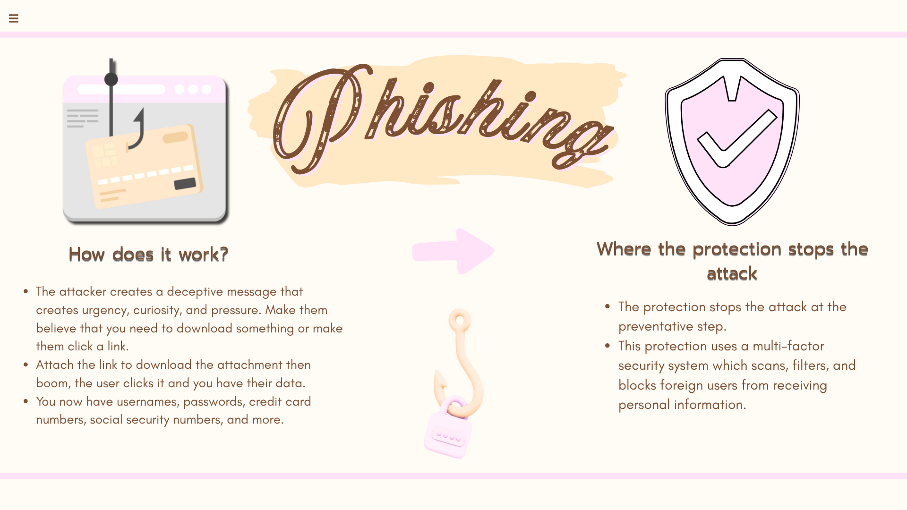

Introduction
Our website covers the impact of phishing and data breaches and corperate responsibilities. This topic is important because we think that many people in the world are uneducated about these topics. These topics are very serious and can end up taking millions and even billions of dollars. So we are here to help you gain the knowledge that you need to know about keeping your personal information safe.
The Ethics
Ethics topic: Data breaches and Corporate responsibilities
The ethical question: After a breach, what do companies owe the people whose data was stolen.This matters to everyday people because many people trust companies with their login information and personal data .
Who is helped and who is harmed?
- The people who are helped are the users/clients using the company's website.
- The people who are harmed are the people whose information and data was exposed.
- Othe groups affected are parnership and supply chains, the company and their reputation, and investors and shareholders.
What the law or a professional code says
Breach Notification Laws: When a data breach has happened, you have to let consumers/users know that their data is no longer confidential. Internal Privacy Codes of Conduct: Legal obligations that apply on a day-to-day basis. Handling rulers for employees and vendors.
Real-world example
North Korea Data Breach -$6.3 Billion Stolen -Fake LinkedIn Job Application, it convinced them to download what looked like a legitimate file but it was malicious -Out of the $6.3 Billion dollars stolen, $2.7 to $3 Billion was frozen.
My position
We take the customers' side, the ones of whom the data is now exposed.
Reason 1:
Companies should be able to detect and revert to normal circumstances.
Reason 2:
The company should be secure in the first place, the customers trust the company and if their data is gone, they should also trust the company to be able to tell them. Integrity.
The other side
Our strongest argument might be the company saying “Users should have read the terms and conditions.” Yes, maybe the user should have known the risks of having their information on this. Yes, big sites like LinkedIn may look reliable but we have to know that not all sites the people know are safe, for example, YouTube could try to sell you stuff. Just because lots of users are currently using it doesn’t mean that it is safe. In addition, you cannot expect for the user to read your small print long paged essay about how you are attacking my hardware.
ATTACK The Attack
Attack topic: Phishing | Security+ category: Installing Malware+ Social Engineering Scam
The attack targets the user's personal information such as credit card numbers, social security number, and as well as your identity.
Real-world example
North Korea Data Breach Date: October 29th 2026 North Korea Data Breach -$6.3 Billion Stolen -Fake LinkedIn Job Application, it convinced them to download what looked like a legitimate file but it was malicious -Out of the $6.3 Billion dollars stolen, $2.7 to $3 Billion was frozen. This attack targeted currency, specifically Korea's type of currency.

Your picture did not load. Check that you uploaded the file to your repository, that you clicked Commit changes, and that the file name in src matches exactly (lowercase, including .png).
FIX The Patch or Protection
Fix / control: Apply anti-phishing software. | Type: preventive
Anti-phishing software can reduce the attack by lessening the chances of getting hacked. The person responsible for applying it is the user.
What you can do today
0 of 3 done
Thank you for reading our website!
(｡· ⩊ ·｡)
──── ୨୧ ────
I hope this website expanded your information on our topics!
♡Thank you♡
♡Thank you♡
Sources
- FBI North Korea Responsible for $6 Billion+ Binance Attack 11/9/26 click here for link
- Kroll 7 out of 10 Individuals Hit by Data Breaches Via Third Party 11/9/26 click here for link
- Federal Trade Commission Equifax Data Breach Settlement 11/3/26 click here for link
- Eva Chen - Co founder of Trendmicro What Are The Different Types Of Phishing 11/10/26 click here for link
- America’s Cyber Defense Agency Recognize and report phishing 11/17/26 click here for link
- IBM What is Phishing? 11/18/26 click here for link
Page check
Press the button to see if your page is ready to turn in.